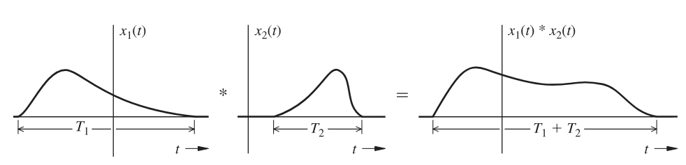
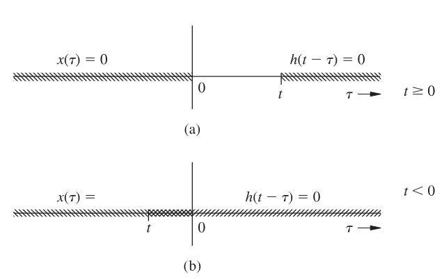
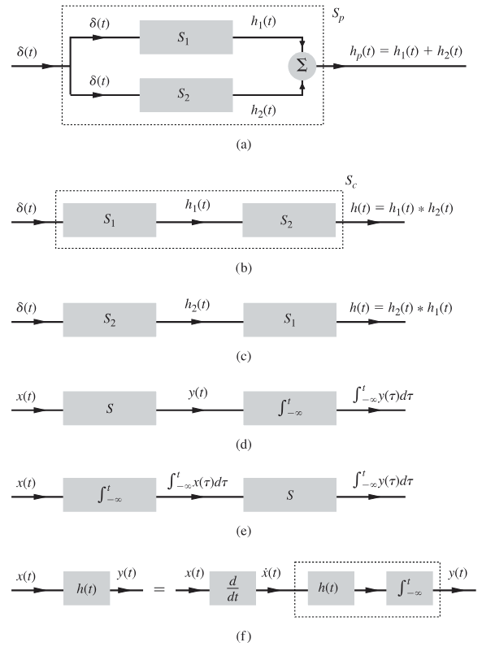

Introdução5.1
A Resposta $h(t)$ ao Impulso Unitário5.2
A resposta ao impulso unitário, denotada por $h(t)$, é a saída de um sistema linear invariante no tempo quando a entrada é um impulso de Dirac $\delta(t)$. Conhecendo $h(t)$, podemos calcular a resposta a qualquer entrada $x(t)$ através da integral de convolução.
Para sistemas descritos por equações diferenciais lineares com coeficientes constantes da forma $Q(D)y(t) = P(D)x(t)$, onde $Q(D)$ é um polinômio de ordem $N$ e $P(D)$ é um polinômio de ordem $M$ (com $M \le N$ por razões de causalidade física), existe um procedimento sistemático para determinar $h(t)$.
Quando $M < N$, a resposta ao impulso não contém impulsos propriamente ditos. Ela é composta apenas por uma combinação linear dos modos característicos do sistema, multiplicada pela função degrau unitário $u(t)$. Os modos característicos são funções exponenciais $e^{\lambda_i t}$, onde $\lambda_i$ são as raízes do polinômio característico $Q(\lambda)=0$.
Assim, escrevemos:
$$h(t) = \big( c_1 e^{\lambda_1 t} + c_2 e^{\lambda_2 t} + \dots + c_N e^{\lambda_N t} \big) u(t).$$
As constantes $c_i$ são determinadas pelas condições iniciais geradas pelo impulso em $t=0$. Para encontrá-las, substituímos $x(t)=\delta(t)$ e $y(t)=h(t)$ na equação diferencial original e igualamos os coeficientes dos termos singulares (impulsos e suas derivadas) que aparecem em ambos os lados.
Vamos ilustrar esse método com um exemplo completo, resolvido passo a passo.
Vamos determinar a resposta ao impulso $h(t)$ para o sistema descrito pela equação diferencial:
$$(D^2 + 5D + 6)y(t) = (D + 1)x(t)$$
Podemos reescrever essa equação em sua forma diferencial explícita para facilitar a visualização:
$$\frac{d^2y}{dt^2} + 5\frac{dy}{dt} + 6y(t) = \frac{dx}{dt} + x(t).$$
Ideia geral do método
Você deve lembrar que a resposta ao impulso $h(t)$ é, por definição, a saída $y(t)$ do sistema quando a entrada $x(t)$ é um impulso unitário $\delta(t)$.
O nosso objetivo é encontrar uma solução que satisfaça a equação diferencial para essa entrada específica. Como sistemas físicos causais só respondem após o estímulo, sabemos que $h(t) = 0$ para $t < 0$. Para $t > 0$, a resposta será governada pela dinâmica natural do sistema. O desafio principal aqui é descobrir como o impulso "dispara" as condições iniciais em $t=0$.
Passo 1: Encontrar a forma funcional de $h(t)$ para $t>0$
Para $t > 0$, o impulso de entrada já ocorreu (em $t=0$) e é nulo. Portanto, a equação que descreve o sistema torna-se a equação homogênea:
$$\frac{d^2y}{dt^2} + 5\frac{dy}{dt} + 6y(t) = 0.$$
Para resolvermos essa equação, propomos uma solução exponencial do tipo $y(t) = e^{\lambda t}$. Substituindo na equação diferencial, encontramos a equação característica:
$$ \lambda^2 + 5\lambda + 6 = 0. $$
Fatorando o polinômio, temos:
$$ (\lambda + 2)(\lambda + 3) = 0. $$
As raízes são $\lambda_1 = -2$ e $\lambda_2 = -3$. Isso nos diz que a solução terá a forma de uma combinação linear dessas exponenciais. Vamos definir uma função auxiliar $f(t)$ que representa essa forma:
$$ f(t) = c_1 e^{-2t} + c_2 e^{-3t} $$
A nossa resposta ao impulso completa, válida para todo o tempo, será essa função "ligada" a partir de zero pelo degrau unitário:
$$ h(t) = f(t)u(t) $$
Nosso trabalho agora se resume a encontrar as constantes $c_1$ e $c_2$.
Passo 2: Calcular as derivadas da resposta ao impulso
Como a equação diferencial envolve a primeira e a segunda derivada de $y(t)$, precisamos derivar nossa expressão candidata $h(t) = f(t)u(t)$.
Lembre-se da regra do produto envolvendo o degrau: a derivada de $u(t)$ é o impulso $\delta(t)$. Além disso, usaremos a propriedade de amostragem: $g(t)\delta(t) = g(0)\delta(t)$.
Primeira derivada $\dot{h}(t)$: $$ \dot{h}(t) = \frac{d}{dt}[f(t)u(t)] = \dot{f}(t)u(t) + f(t)\dot{u}(t) $$ $$ \dot{h}(t) = \dot{f}(t)u(t) + f(t)\delta(t) $$ Pela propriedade da amostragem, $f(t)\delta(t)$ vira $f(0)\delta(t)$: $$ \dot{h}(t) = \dot{f}(t)u(t) + f(0)\delta(t) $$
Segunda derivada $\ddot{h}(t)$: Derivamos a expressão acima novamente: $$ \ddot{h}(t) = \frac{d}{dt}[\dot{f}(t)u(t)] + \frac{d}{dt}[f(0)\delta(t)] $$ $$ \ddot{h}(t) = \left[ \ddot{f}(t)u(t) + \dot{f}(t)\delta(t) \right] + f(0)\dot{\delta}(t) $$ Aplicando a amostragem novamente em $\dot{f}(t)\delta(t)$: $$ \ddot{h}(t) = \ddot{f}(t)u(t) + \dot{f}(0)\delta(t) + f(0)\dot{\delta}(t) $$
Guarde bem essas expressões das derivadas, pois elas contêm os termos impulsivos ($\delta$) e de doublet ($\dot{\delta}$) que precisamos balancear.
Passo 3: Substituição na equação diferencial e balanceamento
Agora, vamos substituir $y(t)$ por $h(t)$ e $x(t)$ por $\delta(t)$ na equação original:
$$ \ddot{h}(t) + 5\dot{h}(t) + 6h(t) = \dot{\delta}(t) + \delta(t) $$
Substituindo as expressões que encontramos no Passo 2 no lado esquerdo (LHS):
$$ \begin{aligned} \text{LHS} = \;& \big[ \ddot{f}(t)u(t) + \dot{f}(0)\delta(t) + f(0)\dot{\delta}(t) \big] \\ +\;& 5\big[ \dot{f}(t)u(t) + f(0)\delta(t) \big] \\ +\;& 6\big[ f(t)u(t) \big] \end{aligned} $$
Vamos agrupar os termos por tipo: os que multiplicam $u(t)$, os que multiplicam $\delta(t)$ e os que multiplicam $\dot{\delta}(t)$.
Termos com $u(t)$: $$[\ddot{f}(t) + 5\dot{f}(t) + 6f(t)]u(t)$$ Observe que o termo entre colchetes é exatamente a equação homogênea que resolvemos no Passo 1. Portanto, toda essa parte é igual a zero.
Termos Singulares (Sobras): O que sobra no lado esquerdo deve ser igual ao lado direito da equação ($\dot{\delta}(t) + \delta(t)$).
Vamos escrever a equação de balanço apenas com o que sobrou:
$$ \underbrace{f(0)\dot{\delta}(t) + \dot{f}(0)\delta(t) + 5f(0)\delta(t)}_{\text{Sobras do lado esquerdo}} = \underbrace{\dot{\delta}(t) + \delta(t)}_{\text{Lado direito (Entrada)}} $$
Agora, vamos agrupar os coeficientes de $\dot{\delta}(t)$ e $\delta(t)$ no lado esquerdo para facilitar a comparação:
$$ \big[ f(0) \big] \dot{\delta}(t) + \big[ \dot{f}(0) + 5f(0) \big] \delta(t) = \big[ 1 \big] \dot{\delta}(t) + \big[ 1 \big] \delta(t) $$
Comparando os coeficientes:
Para que a igualdade seja verdadeira, o que multiplica $\dot{\delta}(t)$ de um lado deve ser igual ao que multiplica do outro, e o mesmo vale para $\delta(t)$.
Comparando $\dot{\delta}(t)$: $$f(0) = 1$$
Comparando $\delta(t)$: $$\dot{f}(0) + 5f(0) = 1$$
Como já sabemos que $f(0)=1$, substituímos na segunda equação: $$ \dot{f}(0) + 5(1) = 1 \implies \dot{f}(0) = -4 $$
Acabamos de descobrir as condições iniciais que $f(t)$ deve satisfazer: $$f(0) = 1 \quad \text{e} \quad \dot{f}(0) = -4$$
Passo 4: Resolver o sistema para $c_1$ e $c_2$
Voltamos à definição de $f(t)$ e sua derivada para aplicar as condições que acabamos de encontrar:
$$ \begin{aligned} f(t) &= c_1 e^{-2t} + c_2 e^{-3t} \\ \dot{f}(t) &= -2c_1 e^{-2t} - 3c_2 e^{-3t} \end{aligned} $$
Aplicando $t=0$:
- $f(0) = c_1 + c_2 = 1$
- $\dot{f}(0) = -2c_1 - 3c_2 = -4$
Agora temos um sistema linear simples: $$ \begin{cases} c_1 + c_2 = 1 \implies c_1 = 1 - c_2 \\ -2c_1 - 3c_2 = -4 \end{cases} $$
Substituindo a primeira na segunda: $$ -2(1 - c_2) - 3c_2 = -4 $$ $$ -2 + 2c_2 - 3c_2 = -4 $$ $$ -c_2 = -2 \implies \boxed{c_2 = 2} $$
Voltando para achar $c_1$: $$ c_1 = 1 - 2 \implies \boxed{c_1 = -1} $$
Passo 5: Expressão final
Com as constantes determinadas, podemos escrever a expressão final para $h(t)$. Substituímos $c_1$ e $c_2$ na expressão de $f(t)$ e multiplicamos pelo degrau unitário:
$$ \boxed{h(t) = (-e^{-2t} + 2e^{-3t})u(t)} $$
Esta é a resposta ao impulso do sistema.
Vamos determinar a resposta ao impulso $h(t)$ para o sistema LCIT:
$$(D + 2)y(t) = (3D + 5)x(t)$$
Ou na forma diferencial:
$$\frac{dy}{dt} + 2y(t) = 3\frac{dx}{dt} + 5x(t)$$
Ideia geral do método
Queremos encontrar a saída $y(t)$ quando a entrada $x(t)$ é um impulso $\delta(t)$. Porém, antes de propor a solução, precisamos olhar para as ordens das derivadas.
Observe a maior derivada de cada lado:
- Saída ($N$): Ordem 1 (devido a $Dy$ ou $\frac{dy}{dt}$)
- Entrada ($M$): Ordem 1 (devido a $3Dx$ ou $3\frac{dx}{dt}$)
Como $N = M$, o sistema tem uma resposta instantânea. Isso obriga nossa solução a ter um termo impulsivo $A\delta(t)$.
Dica: O valor de $A$ é a razão dos coeficientes das maiores derivadas de $x$ pela de $y$: $A = 3/1 = 3$. Vamos confirmar isso no cálculo abaixo.
Passo 1: Encontrar a forma funcional de $h(t)$
Para $t > 0$ (solução homogênea), temos a equação característica $\lambda + 2 = 0 \to \lambda = -2$. A resposta natural é $y_n(t) = K e^{-2t}$.
Devido à regra acima ($N=M$), a resposta completa deve ser a soma do impulso com a resposta natural:
$$ h(t) = A\delta(t) + y_n(t)u(t) $$
Nosso objetivo é achar $A$ e $K$.
Passo 2: Calcular a derivada da resposta ao impulso
Derivamos $h(t)$ usando a regra do produto e a propriedade da amostragem ($g(t)\delta(t) = g(0)\delta(t)$):
$$ h(t) = A\delta(t) + y_n(t)u(t) $$
Primeira derivada $\dot{h}(t)$: $$ \dot{h}(t) = A\dot{\delta}(t) + \dot{y}_n(t)u(t) + y_n(0)\delta(t) $$
Passo 3: Substituição e Equilíbrio de Singularidades
Substituímos na equação original $\dot{h}(t) + 2h(t) = 3\dot{\delta}(t) + 5\delta(t)$:
$$ \underbrace{[A\dot{\delta}(t) + \dot{y}_n(t)u(t) + y_n(0)\delta(t)]}_{\dot{h}(t)} + 2\underbrace{[A\delta(t) + y_n(t)u(t)]}_{h(t)} = 3\dot{\delta}(t) + 5\delta(t) $$
Agrupando os termos por tipo ($\dot{\delta}$, $\delta$ e $u$):
- Termos com $u(t)$: $[\dot{y}_n(t) + 2y_n(t)]u(t) = 0$ (pois é a solução homogênea).
- Termos Singulares: $$ A\dot{\delta}(t) + [y_n(0) + 2A]\delta(t) = 3\dot{\delta}(t) + 5\delta(t) $$
Comparando os lados:
Para $\dot{\delta}(t)$: $$A = 3$$
Para $\delta(t)$: $$y_n(0) + 2A = 5$$ Substituindo $A=3$: $$y_n(0) + 6 = 5 \implies y_n(0) = -1$$
Temos então: $A=3$ e a condição inicial $y_n(0)=-1$.
Passo 4: Determinar a constante $K$
A parte natural é $y_n(t) = K e^{-2t}$. Em $t=0$, temos $y_n(0) = K$.
Como encontramos que $y_n(0) = -1$, então $K = -1$. Logo, $y_n(t) = -e^{-2t}$.
Passo 5: Expressão final
Montamos a resposta final com $A=3$ e a função exponencial:
$$ \boxed{h(t) = 3\delta(t) - e^{-2t}u(t)} $$
Vamos determinar a resposta ao impulso $h(t)$ para o sistema descrito pela equação:
$$D(D + 2)y(t) = (D + 4)x(t)$$
Primeiro, expandimos os operadores para visualizar a equação diferencial completa:
$$(D^2 + 2D)y(t) = (D + 4)x(t)$$
Transformando para a notação de derivadas temporais:
$$\frac{d^2y}{dt^2} + 2\frac{dy}{dt} = \frac{dx}{dt} + 4x(t)$$
Análise Preliminar: A Regra das Ordens
Antes de começar, vamos observar as ordens das derivadas ($N$ e $M$):
- Ordem da Saída ($N$): 2 (devido ao termo $\frac{d^2y}{dt^2}$).
- Ordem da Entrada ($M$): 1 (devido ao termo $\frac{dx}{dt}$).
Como $N > M$ ($2 > 1$), este sistema possui "inércia". Isso significa que a entrada não consegue "vazar" instantaneamente para a saída. Portanto, não teremos um termo $A\delta(t)$ isolado na resposta final. A resposta ao impulso será composta apenas por termos exponenciais que começam em $t=0$.
Passo 1: Encontrar a forma funcional de $h(t)$ para $t>0$
Para $t > 0$, a entrada $x(t) = \delta(t)$ já passou e vale zero. Resolvemos a equação homogênea:
$$\frac{d^2y}{dt^2} + 2\frac{dy}{dt} = 0$$
A equação característica é:
$$\lambda^2 + 2\lambda = 0 \implies \lambda(\lambda + 2) = 0$$
As raízes são:
- $\lambda_1 = 0$
- $\lambda_2 = -2$
A forma da solução natural $f(t)$ será uma combinação linear dessas exponenciais:
$$f(t) = c_1 e^{0t} + c_2 e^{-2t} \implies f(t) = c_1 + c_2 e^{-2t}$$
Nossa resposta ao impulso completa será: $$h(t) = f(t)u(t) = (c_1 + c_2 e^{-2t})u(t)$$
Passo 2: Calcular as derivadas da resposta ao impulso
Como a equação é de segunda ordem, precisamos das duas primeiras derivadas de $h(t) = f(t)u(t)$.
Lembre-se: $\frac{d}{dt}u(t) = \delta(t)$ e $g(t)\delta(t) = g(0)\delta(t)$.
Primeira derivada $\dot{h}(t)$: $$\dot{h}(t) = \dot{f}(t)u(t) + f(0)\delta(t)$$
Segunda derivada $\ddot{h}(t)$: $$\ddot{h}(t) = \ddot{f}(t)u(t) + \dot{f}(0)\delta(t) + f(0)\dot{\delta}(t)$$
Passo 3: Substituição e Balanceamento de Singularidades
Agora, substituímos $h(t)$ e suas derivadas na equação diferencial original, lembrando que no lado direito temos a entrada $x(t) = \delta(t)$:
$$\ddot{h}(t) + 2\dot{h}(t) = \dot{\delta}(t) + 4\delta(t)$$
Substituindo as expressões do Passo 2 no lado esquerdo (LHS):
$$ \begin{aligned} \text{LHS} = \;& \big[ \ddot{f}(t)u(t) + \dot{f}(0)\delta(t) + f(0)\dot{\delta}(t) \big] \\ +\;& 2\big[ \dot{f}(t)u(t) + f(0)\delta(t) \big] \end{aligned} $$
Agrupando os termos:
Termos com $u(t)$: $[\ddot{f}(t) + 2\dot{f}(t)]u(t) = 0$ (Cai na equação homogênea).
Termos Singulares (Balanceamento): O que sobrou deve ser igual ao lado direito da entrada ($\dot{\delta}(t) + 4\delta(t)$):
$$f(0)\dot{\delta}(t) + [\dot{f}(0) + 2f(0)]\delta(t) = 1\dot{\delta}(t) + 4\delta(t)$$
Comparando os coeficientes:
Para $\dot{\delta}(t)$: $$f(0) = 1$$
Para $\delta(t)$: $$\dot{f}(0) + 2f(0) = 4$$ Substituindo $f(0) = 1$: $$\dot{f}(0) + 2(1) = 4 \implies \dot{f}(0) = 2$$
As condições iniciais para nossa função $f(t)$ são $f(0) = 1$ e $\dot{f}(0) = 2$.
Passo 4: Resolver o sistema para $c_1$ e $c_2$
Usamos as condições encontradas na nossa expressão de $f(t)$:
$$f(t) = c_1 + c_2 e^{-2t}$$ $$\dot{f}(t) = -2c_2 e^{-2t}$$
Aplicando $f(0) = 1$: $$c_1 + c_2 = 1$$
Aplicando $\dot{f}(0) = 2$: $$-2c_2 = 2 \implies \boxed{c_2 = -1}$$
Substituindo $c_2$ na primeira equação: $$c_1 + (-1) = 1 \implies \boxed{c_1 = 2}$$
Passo 5: Expressão final
Substituímos as constantes $c_1$ e $c_2$ na forma funcional do Passo 1:
$$f(t) = 2 - 1e^{-2t}$$
Multiplicando pelo degrau unitário para indicar que o sistema é causal ($h(t)=0$ para $t<0$):
$$\boxed{h(t) = (2 - e^{-2t})u(t)}$$
Este resultado bate exatamente com a resposta fornecida no gabarito da imagem.
Vamos determinar a resposta ao impulso $h(t)$ para o sistema descrito pela equação:
$$(D^2 + 2D + 1)y(t) = Dx(t)$$
Transformando para a notação de derivadas temporais:
$$\frac{d^2y}{dt^2} + 2\frac{dy}{dt} + y(t) = \frac{dx}{dt}$$
Análise Preliminar: A Regra das Ordens
- Ordem da Saída ($N$): 2
- Ordem da Entrada ($M$): 1
Como $N > M$, o sistema possui inércia suficiente para "suavizar" o impacto imediato do impulso. Portanto, não teremos o termo $A\delta(t)$. A resposta $h(t)$ começará do zero (ou de um valor finito) e evoluirá conforme a dinâmica natural.
Passo 1: Encontrar a forma funcional de $h(t)$ (Raízes Repetidas)
Para $t > 0$, resolvemos a equação homogênea:
$$\frac{d^2y}{dt^2} + 2\frac{dy}{dt} + y(t) = 0$$
A equação característica é: $$\lambda^2 + 2\lambda + 1 = 0 \implies (\lambda + 1)^2 = 0$$
Temos uma raiz real repetida: $\lambda_1 = \lambda_2 = -1$.
Quando as raízes são repetidas, a solução natural não pode ser apenas $e^{-t}$, pois precisamos de duas funções linearmente independentes. A forma correta é: $$f(t) = (c_1 + c_2 t)e^{-t}$$
Nossa resposta ao impulso completa será: $$h(t) = (c_1 + c_2 t)e^{-t}u(t)$$
Passo 2: Calcular as derivadas da resposta ao impulso
Usaremos as fórmulas padrão para as derivadas de $h(t) = f(t)u(t)$:
Primeira derivada $\dot{h}(t)$: $$\dot{h}(t) = \dot{f}(t)u(t) + f(0)\delta(t)$$
Segunda derivada $\ddot{h}(t)$: $$\ddot{h}(t) = \ddot{f}(t)u(t) + \dot{f}(0)\delta(t) + f(0)\dot{\delta}(t)$$
Passo 3: Substituição e Balanceamento de Singularidades
Substituímos na equação original, onde a entrada é $x(t) = \delta(t)$, logo o lado direito é $\dot{\delta}(t)$:
$$\ddot{h}(t) + 2\dot{h}(t) + h(t) = \dot{\delta}(t)$$
Substituindo as expressões das derivadas:
$$ \begin{aligned} \text{LHS} = \;& \big[ \ddot{f}(t)u(t) + \dot{f}(0)\delta(t) + f(0)\dot{\delta}(t) \big] \\ +\;& 2\big[ \dot{f}(t)u(t) + f(0)\delta(t) \big] \\ +\;& \big[ f(t)u(t) \big] \end{aligned} $$
Agrupando os termos:
- Termos com $u(t)$: $[\ddot{f}(t) + 2\dot{f}(t) + f(t)]u(t) = 0$ (Solução homogênea).
- Termos Singulares: $$f(0)\dot{\delta}(t) + [\dot{f}(0) + 2f(0)]\delta(t) = 1\dot{\delta}(t) + 0\delta(t)$$
Comparando os coeficientes:
Para $\dot{\delta}(t)$: $$f(0) = 1$$
Para $\delta(t)$: $$\dot{f}(0) + 2f(0) = 0$$ Substituindo $f(0) = 1$: $$\dot{f}(0) + 2(1) = 0 \implies \dot{f}(0) = -2$$
As condições iniciais para $f(t)$ são $f(0) = 1$ e $\dot{f}(0) = -2$.
Passo 4: Resolver o sistema para $c_1$ e $c_2$
Temos a função e sua derivada (usando a regra do produto): $$f(t) = (c_1 + c_2 t)e^{-t}$$ $$\dot{f}(t) = c_2 e^{-t} - (c_1 + c_2 t)e^{-t}$$
Aplicando $f(0) = 1$: $$(c_1 + c_2 \cdot 0)e^{0} = 1 \implies \boxed{c_1 = 1}$$
Aplicando $\dot{f}(0) = -2$: $$c_2 e^{0} - (c_1 + c_2 \cdot 0)e^{0} = -2$$ $$c_2 - c_1 = -2$$ Substituindo $c_1 = 1$: $$c_2 - 1 = -2 \implies \boxed{c_2 = -1}$$
Passo 5: Expressão final
Substituímos $c_1 = 1$ e $c_2 = -1$ na forma original:
$$f(t) = (1 - 1t)e^{-t} = (1 - t)e^{-t}$$
Adicionando o degrau unitário:
$$\boxed{h(t) = (1 - t)e^{-t}u(t)}$$
Este resultado coincide exatamente com a alternativa (c) do seu exercício.
Resposta do Sistema à Entrada Externa: Resposta de Estado Nulo5.3
Nesta sessão, você aprenderá como determinar a resposta de estado nulo de um sistema LCIT (Linear e Invariante no Tempo com Coeficientes Constantes). Esse termo refere-se à saída $y(t)$ produzida quando o sistema recebe uma entrada $x(t)$, partindo do pressuposto de que todas as condições iniciais são nulas. Para fins didáticos, trataremos essa resposta como a resposta total do sistema.
Para compreendermos como o sistema reage a uma entrada qualquer, utilizaremos o princípio da superposição. O primeiro passo é decompor o sinal $x(t)$ em componentes mais simples. Imagine um pulso básico $p(t)$, com altura unitária e uma largura muito estreita $\Delta\tau$, começando em $t = 0$, conforme você pode observar no diagrama abaixo:

Qualquer sinal complexo $x(t)$ pode ser visto como uma soma de diversos pulsos retangulares desse tipo. Se pegarmos um pulso que começa no instante $t = n\Delta\tau$, sua altura será dada pelo valor da função naquele ponto, ou seja, $x(n\Delta\tau)$. Esse pequeno pulso individual é representado matematicamente por $x(n\Delta\tau)p(t - n\Delta\tau)$, como ilustrado na representação a seguir:

Ao somarmos todos esses pulsos, reconstruímos a função original. A manipulação matemática fundamental ocorre quando fazemos a largura do pulso ($\Delta\tau$) tender a zero. Nesse limite, o pulso retangular se transforma em um impulso unitário $\delta(t)$. Assim, a entrada $x(t)$ pode ser reescrita como uma soma infinita (integral) de impulsos deslocados e escalonados:
$$x(t) = \lim_{\Delta\tau \to 0} \sum_{\tau} x(n\Delta\tau)\delta(t - n\Delta\tau) \Delta\tau$$
Agora, entra em jogo o motivo de termos estudado a resposta ao impulso $h(t)$. Lembre-se: a resposta ao impulso $h(t)$ é, por definição, a saída do sistema quando a entrada é um impulso unitário e todas as suas condições iniciais são zero.
Portanto, quando usamos a resposta ao impulso para calcular a saída para uma entrada qualquer, estamos, automaticamente, calculando a resposta de estado nulo. A saída resultante $y(t)$ será a resposta do sistema excitado apenas pela entrada $x(t)$, como se ele tivesse partido do repouso completo (sem energia armazenada).
Pelas propriedades de sistemas LCIT, sabemos como o sistema reage a impulsos:
- Se a entrada é $\delta(t)$, a saída é $h(t)$.
- Como o sistema é invariante no tempo, se atrasarmos o impulso para $\delta(t - n\Delta\tau)$, a saída será simplesmente $h(t - n\Delta\tau)$.
- Como o sistema é linear, se multiplicarmos o impulso por um peso $x(n\Delta\tau)\Delta\tau$, a saída será multiplicada pelo mesmo valor.
Ao aplicarmos a superposição para todos os infinitos impulsos que compõem $x(t)$, a soma se transforma em uma integral. O resultado é a expressão que define a saída do sistema para qualquer entrada:
$$y(t) = \int_{-\infty}^{\infty} x(\tau)h(t - \tau) d\tau$$
Essa operação é o que chamamos de Integral de Convolução. Ela nos mostra que a resposta de um sistema é determinada pela interação entre a entrada e os modos característicos do sistema, que estão "guardados" dentro da função $h(t)$.
Note que $h(t)$ funciona como uma "impressão digital" do sistema. Uma vez que você conhece a resposta ao impulso unitário (que já presume condições iniciais nulas), você tem em mãos a ferramenta para prever o comportamento do sistema diante de qualquer sinal de entrada imaginável, ou seja, para calcular a resposta de estado nulo para qualquer $x(t)$.
A Integral de Convolução5.3.1
Veremos algumas propriedades da resposta de estado nulo $y(t)$, que obtivemos anteriormente. Essa resposta é definida por uma integral que aparece com enorme frequência em áreas como ciências físicas, engenharia e matemática. Por conta de sua importância, ela recebe o nome especial de integral de convolução.
A operação de convolução entre duas funções, $x_1(t)$ e $x_2(t)$, é representada simbolicamente pelo operador asterisco ($*$) e sua definição matemática é dada por:
$$x_1(t) * x_2(t) \equiv \int_{-\infty}^{\infty} x_1(\tau)x_2(t - \tau) d\tau$$
Abaixo, exploraremos as propriedades fundamentais que tornam essa ferramenta tão poderosa para a análise de sistemas.
Propriedade Comutativa5.3.2
Você deve notar que a ordem das funções na convolução não altera o resultado final, ou seja, a operação é comutativa:
$$x_1(t) * x_2(t) = x_2(t) * x_1(t)$$
Essa propriedade pode ser demonstrada matematicamente através de uma mudança de variável. Se definirmos $z = t - \tau$, teremos $\tau = t - z$ e $d\tau = -dz$. Ao realizarmos essa substituição na definição da integral, obtemos:
$$x_1(t) * x_2(t) = -\int_{\infty}^{-\infty} x_2(z)x_1(t - z) dz = \int_{-\infty}^{\infty} x_2(z)x_1(t - z) dz = x_2(t) * x_1(t)$$
Propriedade Distributiva5.3.3
A convolução respeita a soma de funções, permitindo que você distribua o sinal sobre uma adição:
$$x_1(t) * [x_2(t) + x_3(t)] = x_1(t) * x_2(t) + x_1(t) * x_3(t)$$
Propriedade Associativa5.3.4
Quando você lida com três ou mais sinais em cascata, o agrupamento das operações também não altera o sinal de saída:
$$x_1(t) * [x_2(t) * x_3(t)] = [x_1(t) * x_2(t)] * x_3(t)$$
É fundamental lembrar que, para que esses resultados sejam válidos, assumimos que o sistema é invariante no tempo. Caso o sistema seja variante, a resposta ao impulso assumirá a forma $h(t, \tau)$ e a integral será modificada para: $$y(t) = \int_{-\infty}^{\infty} x(\tau)h(t, \tau) d\tau$$
Propriedade de Deslocamento5.3.5
Se você conhece o resultado de uma convolução básica, como $x_1(t) * x_2(t) = c(t)$, pode facilmente determinar o efeito de atrasos nos sinais de entrada. Se um dos sinais for deslocado por um tempo $T$, a saída sofrerá o mesmo deslocamento:
$$x_1(t) * x_2(t - T) = c(t - T)$$
Se ambos os sinais possuírem deslocamentos distintos, o atraso total na saída será a soma desses deslocamentos:
$$x_1(t - T_1) * x_2(t - T_2) = c(t - T_1 - T_2)$$
Convolução com um Impulso5.3.6
A convolução de qualquer função $x(t)$ com o impulso unitário $\delta(t)$ resulta na própria função $x(t)$. Pela definição da operação, temos:
$$x(t) * \delta(t) = \int_{-\infty}^{\infty} x(\tau)\delta(t - \tau) d\tau$$
Como o impulso $\delta(t - \tau)$ está localizado exatamente em $\tau = t$, a propriedade de amostragem do impulso extrai o valor da função naquele ponto específico, resultando em:
$$x(t) * \delta(t) = x(t)$$
Propriedade da Largura5.3.7
Uma observação prática importante para você é que, se as funções $x_1(t)$ e $x_2(t)$ possuem durações finitas, representadas por $T_1$ e $T_2$, a duração total (ou largura) do sinal resultante da convolução será exatamente a soma dessas larguras: $T_1 + T_2$.

Resposta de Estado Nulo e Causalidade5.3.8
Como estudamos anteriormente, a resposta de estado nulo $y(t)$ de um sistema LCIT é expressa pela integral de convolução entre a entrada e a resposta ao impulso:
$$y(t) = x(t) * h(t) = \int_{-\infty}^{\infty} x(\tau)h(t - \tau) d\tau$$
Na prática, você lidará majoritariamente com sistemas causais, nos quais a resposta não pode ocorrer antes da aplicação da entrada. Além disso, a maioria dos sinais de entrada que utilizaremos também são causais, iniciando em $t = 0$.
Essa restrição física simplifica significativamente os limites de integração. Se o sistema é causal, sua resposta ao impulso unitário $\delta(t)$ não começa antes de $t = 0$, logo, $h(t)$ é um sinal causal. Se a entrada $x(t)$ também é causal, ela será nula para todo tempo negativo. Graficamente, isso significa que o produto $x(\tau)h(t - \tau)$ será zero em quase todo lugar, exceto no intervalo entre $0$ e $t$.

Portanto, para sinais e sistemas causais, a integral de convolução se reduz a:
$$y(t) = \int_{0^{-}}^{t} x(\tau)h(t - \tau) d\tau, \quad t \geq 0$$
Para um sistema LCIT com resposta ao impulso unitário dada por
$$h(t) = e^{-2t}u(t),$$
determine a resposta $y(t)$ para a entrada
$$x(t) = e^{-t}u(t).$$
Ideia geral do método
Como o sistema é LCIT, a saída é dada pela convolução entre a entrada e a resposta ao impulso:
$$ y(t) = (x * h)(t) = \int_{-\infty}^{\infty} x(\tau)\,h(t-\tau)\,d\tau. $$
Passo 1: Substituição direta das funções
Temos:
$$ x(\tau) = e^{-\tau}u(\tau), \qquad h(t-\tau) = e^{-2(t-\tau)}u(t-\tau). $$
Logo, o integrando da convolução é:
$$ x(\tau)h(t-\tau) = e^{-\tau}e^{-2(t-\tau)}u(\tau)u(t-\tau). $$
Passo 2: Determinação dos limites de integração
A presença de $u(\tau)$ e $u(t-\tau)$ impõe as condições:
$$ \tau \ge 0 \quad \text{e} \quad t-\tau \ge 0 \;\Rightarrow\; \tau \le t. $$
Portanto, a região válida de integração é:
$$ 0 \le \tau \le t, $$
e a convolução fica:
$$ y(t) = \int_{0}^{t} e^{-\tau}e^{-2(t-\tau)}\,d\tau, \qquad t \ge 0. $$
Passo 3: Simplificação do integrando
Separando os termos dependentes de $t$:
$$ e^{-\tau}e^{-2(t-\tau)} = e^{-2t}e^{\tau}. $$
Assim,
$$ y(t) = e^{-2t}\int_{0}^{t} e^{\tau}\,d\tau, \qquad t \ge 0. $$
Passo 4: Cálculo da integral
Calculando a integral:
$$ \int_{0}^{t} e^{\tau}\,d\tau = e^{t} - 1. $$
Substituindo:
$$ y(t) = e^{-2t}(e^{t} - 1) = e^{-t} - e^{-2t}, \qquad t \ge 0. $$
Passo 5: Inclusão da causalidade
Como o sistema é causal, a saída é nula para $t<0$. Logo:
$$ \boxed{ y(t) = \big(e^{-t} - e^{-2t}\big)u(t) } $$
Essa é a resposta do sistema à entrada $x(t)=e^{-t}u(t)$.
Para um sistema LCIT com resposta ao impulso unitário dada por
$$h(t) = 6e^{-t}u(t),$$
determine a resposta do sistema para a entrada
$$x(t) = 2u(t).$$
Ideia geral do método
Como o sistema é linear, causal e invariante no tempo (LCIT), a saída é dada pela convolução:
$$ y(t) = (x*h)(t) = \int_{-\infty}^{\infty} x(\tau)\,h(t-\tau)\,d\tau. $$
Passo 1: Substituição direta das funções
Temos:
$$ x(\tau) = 2u(\tau), \qquad h(t-\tau) = 6e^{-(t-\tau)}u(t-\tau). $$
Logo, o integrando fica:
$$ x(\tau)h(t-\tau) = 12e^{-(t-\tau)}u(\tau)u(t-\tau). $$
Passo 2: Determinação dos limites de integração
As funções degrau impõem:
$$ \tau \ge 0 \quad \text{e} \quad t-\tau \ge 0 \;\Rightarrow\; 0 \le \tau \le t. $$
Portanto:
$$ y(t) = \int_{0}^{t} 12e^{-(t-\tau)}\,d\tau, \qquad t \ge 0. $$
Passo 3: Simplificação da integral
Colocando os termos que não dependem de $\tau$ em evidência:
$$ y(t) = 12e^{-t}\int_{0}^{t} e^{\tau}\,d\tau, \qquad t \ge 0. $$
Passo 4: Cálculo da integral
$$ \int_{0}^{t} e^{\tau}\,d\tau = e^{t} - 1. $$
Substituindo:
$$ y(t) = 12e^{-t}(e^{t}-1) = 12(1 - e^{-t}), \qquad t \ge 0. $$
Passo 5: Inclusão da causalidade
Como o sistema é causal, $y(t)=0$ para $t<0$. Logo:
$$ \boxed{ y(t) = 12(1 - e^{-t})u(t) } $$
Essa é a resposta do sistema para a entrada $x(t)=2u(t)$.
Para um sistema LCIT com resposta ao impulso unitário dada por
$$h(t) = 6e^{-t}u(t),$$
determine a resposta do sistema para a entrada
$$x(t) = 3e^{-3t}u(t).$$
Ideia geral do método
Como o sistema é LCIT, a saída é dada pela convolução:
$$ y(t) = (x*h)(t) = \int_{-\infty}^{\infty} x(\tau)\,h(t-\tau)\,d\tau. $$
Passo 1: Substituição direta das funções
$$ x(\tau) = 3e^{-3\tau}u(\tau), \qquad h(t-\tau) = 6e^{-(t-\tau)}u(t-\tau). $$
Logo, o integrando é:
$$ x(\tau)h(t-\tau) = 18e^{-3\tau}e^{-(t-\tau)}u(\tau)u(t-\tau). $$
Passo 2: Determinação dos limites de integração
As funções degrau impõem:
$$ 0 \le \tau \le t. $$
Portanto:
$$ y(t) = \int_{0}^{t} 18e^{-3\tau}e^{-(t-\tau)}\,d\tau, \qquad t \ge 0. $$
Passo 3: Simplificação do integrando
$$ 18e^{-3\tau}e^{-(t-\tau)} = 18e^{-t}e^{-2\tau}. $$
Logo:
$$ y(t) = 18e^{-t}\int_{0}^{t} e^{-2\tau}\,d\tau, \qquad t \ge 0. $$
Passo 4: Cálculo da integral
$$ \int_{0}^{t} e^{-2\tau}\,d\tau = \left[-\frac{1}{2}e^{-2\tau}\right]_{0}^{t} = \frac{1}{2}(1 - e^{-2t}). $$
Substituindo:
$$ y(t) = 18e^{-t}\cdot \frac{1}{2}(1 - e^{-2t}) = 9e^{-t}(1 - e^{-2t}). $$
Expandindo:
$$ y(t) = 9(e^{-t} - e^{-3t}), \qquad t \ge 0. $$
Passo 5: Inclusão da causalidade
Como o sistema é causal:
$$ \boxed{ y(t) = 9\big(e^{-t} - e^{-3t}\big)u(t) } $$
Essa é a resposta do sistema para a entrada $x(t)=3e^{-3t}u(t)$.
Sistemas Interconectados5.3.9
Sistemas maiores e mais complexos geralmente podem ser compreendidos como a interconexão de diversos subsistemas menores, cada um mais fácil de ser caracterizado individualmente. Ao conhecer as propriedades desses subsistemas, torna-se muito mais simples analisar o comportamento do sistema global. Neste capítulo, você deve considerar duas conexões básicas: a conexão em série (também chamada de cascade) e a conexão em paralelo.
Para ilustrar esses conceitos, a imagem abaixo apresenta na letra (a) da figura abaixo dois subsistemas LCIT conectados em paralelo e, na letra (b), os mesmos subsistemas conectados em série:

Na letra (a), você observará um dispositivo representado pelo símbolo $\Sigma$ dentro de um círculo, que atua como um somador de sinais. Além disso, o ponto onde dois ou mais ramos se dividem é chamado de nó de separação, onde cada ramo resultante carrega exatamente o mesmo sinal da junção original. No exemplo da letra (a), a entrada é aplicada a um nó de separação que irradia o sinal para ambos os subsistemas.
Considerando que as respostas ao impulso de $S_1$ e $S_2$ sejam $h_1(t)$ e $h_2(t)$, respectivamente, assumimos que a conexão não altera suas características individuais (ou seja, os sistemas não se "carregam").
Para determinar $h_p(t)$, que é a resposta ao impulso do sistema paralelo, aplicamos um impulso $\delta(t)$ na entrada. Isso resulta no sinal $\delta(t)$ chegando simultaneamente em $S_1$ e $S_2$, gerando as saídas $h_1(t)$ e $h_2(t)$, que são somadas ao final. Consequentemente, a resposta total é: $$h_p(t) = h_1(t) + h_2(t) \quad (2.43a)$$
No caso do sistema em série $S_c$ (letra (b)), ao aplicarmos $\delta(t)$, ele passa primeiro por $S_1$, produzindo a saída $h_1(t)$. Este sinal torna-se a entrada de $S_2$, e a resposta final de $S_2$ a essa entrada será a convolução entre os dois: $$h_c(t) = h_1(t) * h_2(t) \quad (2.43b)$$
Devido à propriedade comutativa da convolução, você pode alternar a ordem dos sistemas $S_1$ e $S_2$ sem alterar a resposta impulsiva total, como mostrado na letra (c). Teoricamente, a ordem em que as operações lineares em série são executadas não é importante, embora limitações físicas reais possam influenciar a performance final.